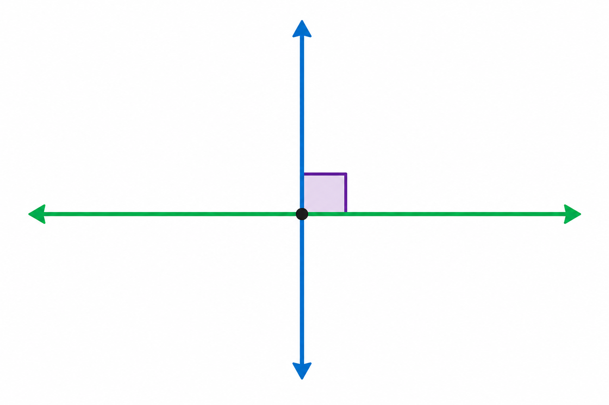

1
proste prostopadłe
перпендикулярні прямі

📘 Co to jest? Що це?
Proste prostopadłe przecinają się pod kątem prostym (90°).
Перпендикулярні прямі перетинаються під прямим кутом (90°).
⭐ Zapamiętaj Запам'ятай
a ⊥ b
Запис: a ⊥ b. На малюнку часто значок □ у куті.
⚠ Nie pomyl Не плутай
- ⊥ = kąt 90°równoległe
✅ Przykłady Приклади
- ⊥ — prostopadłe
- kąt 90°
- ⊥ przy przecięciu
- narysuj z kątomierzem
- AB ⊥ CD